Page shell
templates/shell.htmlThe canonical order every page starts from: skip-link, site-alert, header, main, footer.
7 components · drawn at 1440 · adapts to phones
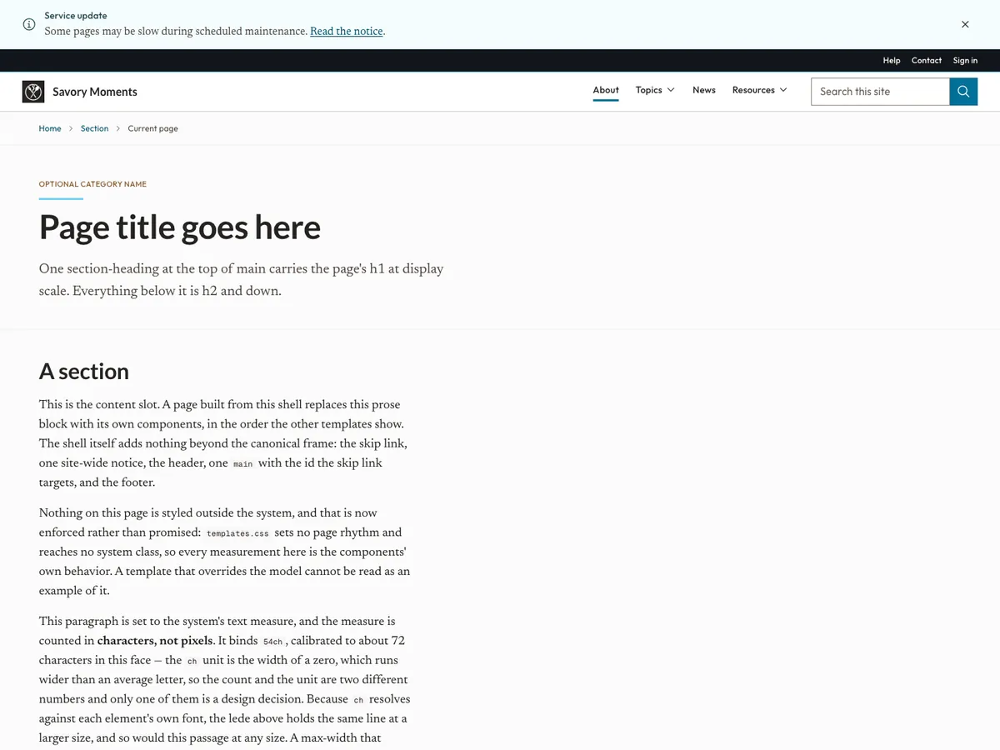
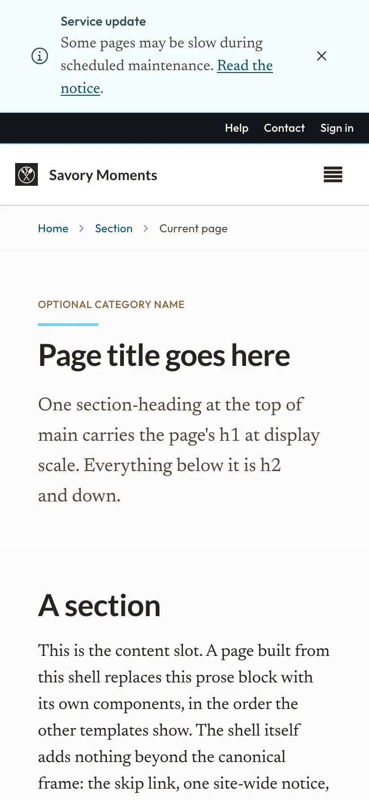
AODS · Templates
Every full page the system ships, built only from its components. Each one is a real page: open a template to see it at desktop and phone widths, then view it live, resize it, and take its markup.
For designers starting a page and engineers who want a working composition to copy. Open a template below, or use the chips to go straight to one. A template opens in a new tab; its Close template button brings you back here.
7 templates · 3 groups · each drawn at 1440 and adapting down to 320
The frame every page shares, and the front door built on it.
The canonical order every page starts from: skip-link, site-alert, header, main, footer.
7 components · drawn at 1440 · adapts to phones


A front door: hero with search and a call to action, a stat band, topic tiles, a numbered section opener, a row of cards and a summary.
14 components · drawn at 1440 · adapts to phones
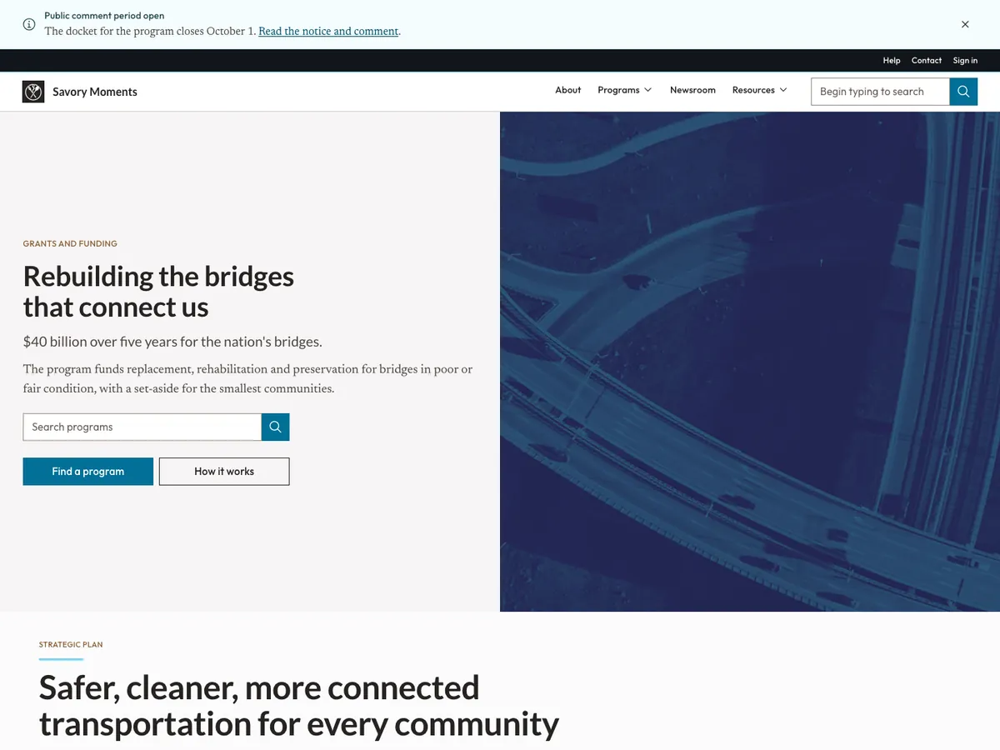
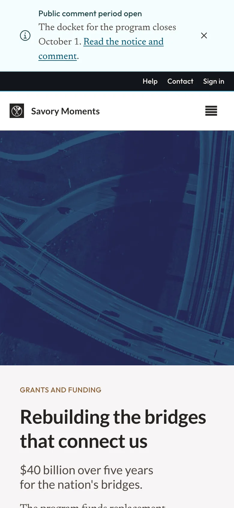
A long read with its contents, or on its own.
A long read: breadcrumb, eyebrow and title, a metadata row, contents rail, prose with a pull-quote, related items and pagination.
14 components · drawn at 1440 · adapts to phones
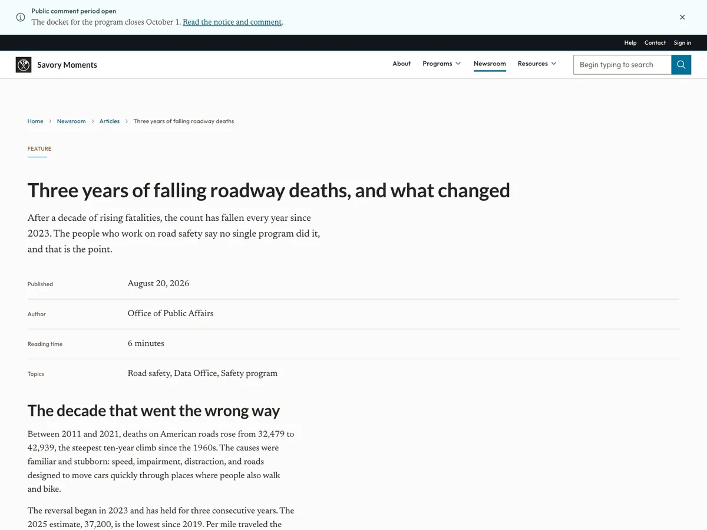
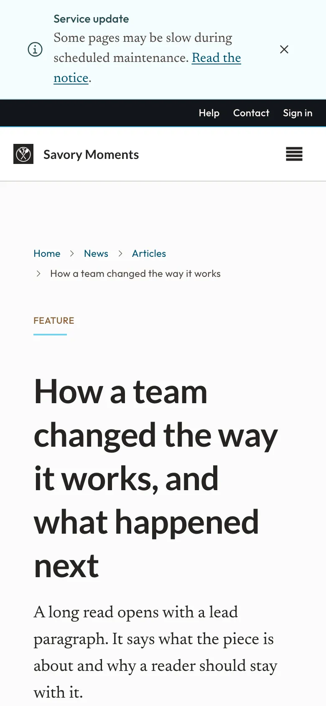
Pages where the user does something: fills a form, searches, reads the numbers, gets help.
One page of a journey: the step indicator, an error summary, the form laid out by the form pattern rules, the journey actions, a confirm dialog and a toast.
18 components · drawn at 1440 · adapts to phones
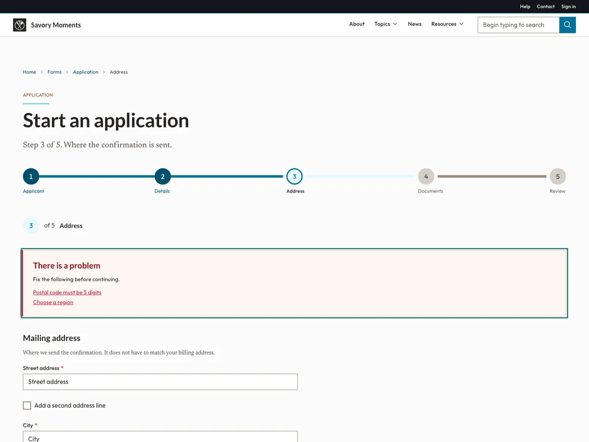
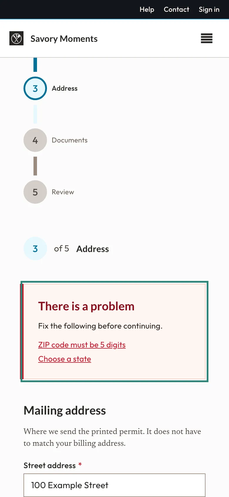
Site search: the full-width field, filters, a segmented type filter, a results collection and pagination; then the empty and loading states the same page shows.
10 components · drawn at 1440 · adapts to phones
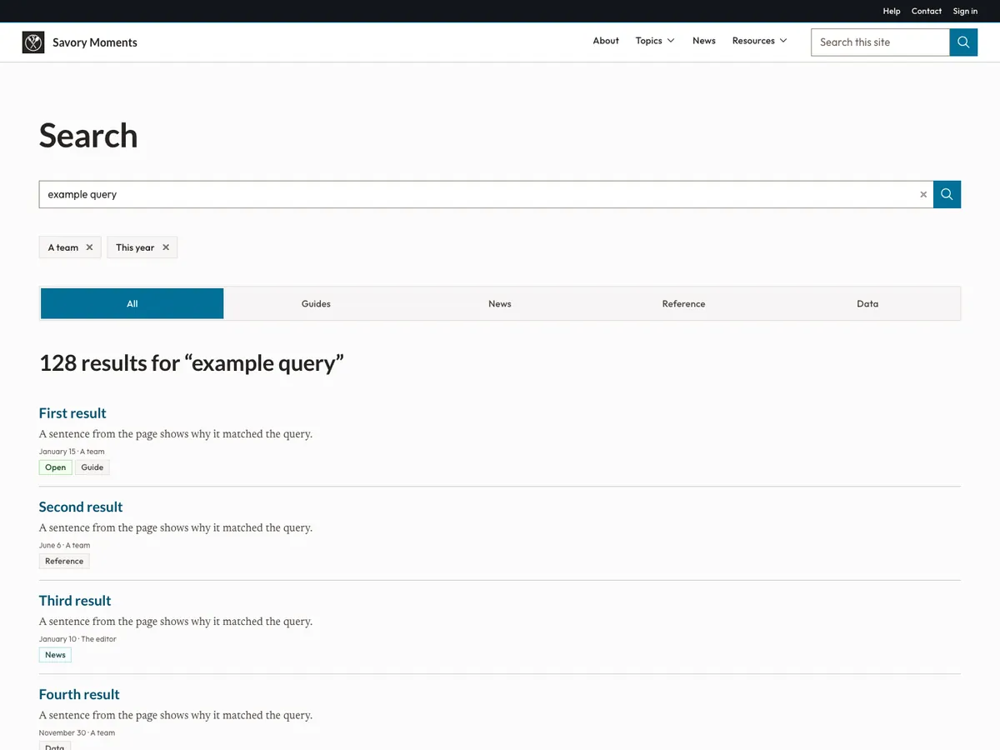
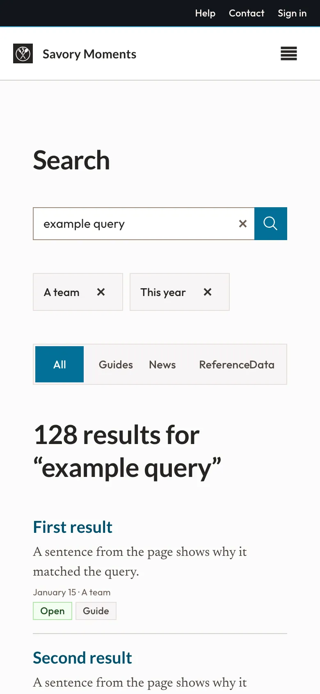
A statistics page: headline numbers, a sortable table that stacks on narrow screens, its empty and loading states, the downloads, and the sources.
10 components · drawn at 1440 · adapts to phones
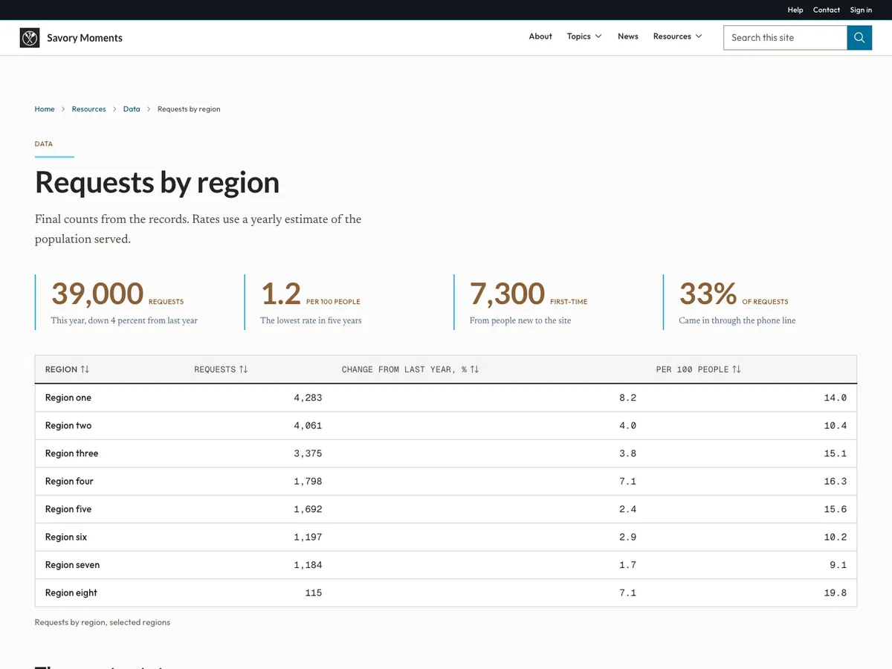
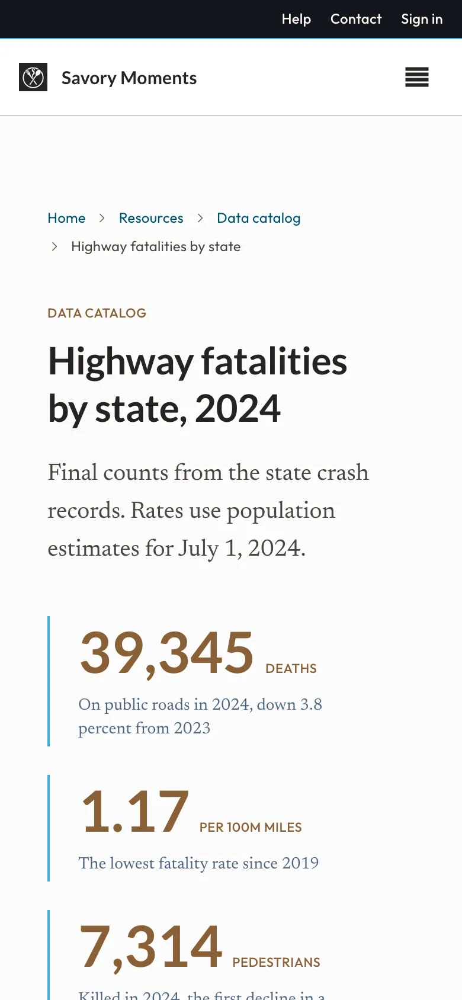
An AI assistant page: the header, a title, and the whole conversational exchange in a container, or in a bottom sheet in the sheet variant.
15 components · drawn at 1440 · adapts to phones
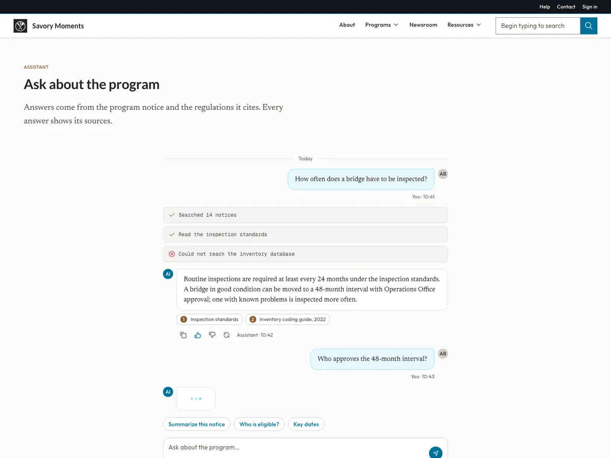
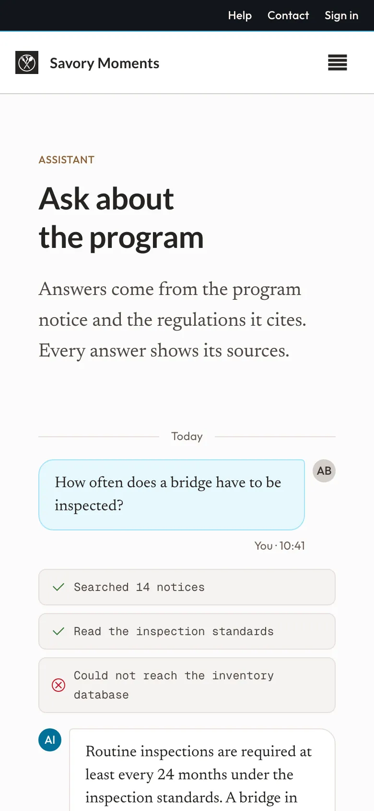